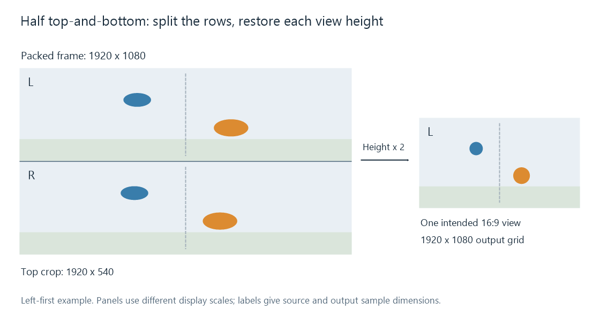

Top-and-Bottom 3D Video
Top-and-bottom 3D stores the two eye views in vertically stacked regions of a conventional video frame.
| Layout for intended 1920 × 1080 views | Combined coded frame | Stored region for each eye |
|---|---|---|
| Half top-and-bottom | 1920 × 1080 | 1920 × 540 |
| Full top-and-bottom | 1920 × 2160 | 1920 × 1080 |
Top-and-bottom, also called above-below or over-under, places the two eye pictures in stacked regions. The top region and the bottom region represent separate views of the same instant.
The half-height form keeps a conventional overall frame size. Each view has the full horizontal sample count and half the vertical count. Its raw square-pixel shape is 32:9; restoring the intended 16:9 shape requires doubling its displayed height.

Left-eye-on-top example. The 1920 × 540 crop is reconstructed into a 1920 × 1080 output grid. Diagram panels use different inspection scales.
Rows, view order, and display shape
For an even height H, the top region occupies rows 0 through H/2−1; the bottom occupies H/2 through H−1. Both use the full frame width.
For H = 1080, this means rows 0–539 and 540–1079. A crop operation identifies the region, while scaling or an equivalent display mapping supplies the additional output positions needed for its intended height.
The reduced vertical sampling affects horizontal edges and fine vertical variation. A 1920 × 540 region and a 960 × 1080 half-SBS region contain the same 1,036,800 luma positions, allocated differently across the two directions. This is a spatial sampling distinction, rather than a difference in how many eye views are supplied.
Eye order is explicit information. In Matroska, StereoMode 3 means left eye first in the top region; 2 means right eye first. The name top-and-bottom alone does not establish that assignment.
What an ordinary playback path shows
A conventional decoder recovers the combined raster. If the app presents it as one 2D image, both views appear stacked and vertically compressed in the half-height form.
For an Emby session, the 3D identification information describes the stored layout. The app/output path needs to use that information to separate the regions, restore their geometry, and send each to the correct eye. A frame copied unchanged through a server route can therefore retain both views as pixels while the final presentation still shows the combined rectangle.
The separator belongs to the specified layout
These simple top-and-bottom examples split the coded image directly at half its height. HDMI frame packing uses an output timing structure with full views and an intervening active-space interval. Its familiar 1080p24 arrangement contains 1080 + 45 + 1080 rows, so cutting it at the halfway row is a different extraction from the one above.
For a top-and-bottom file being converted to another layout, preserve both view regions and their same-instant pairing. For a 2D conversion, select the desired region and restore its view shape. The row ranges and per-view dimensions provide the concrete input geometry for either operation.